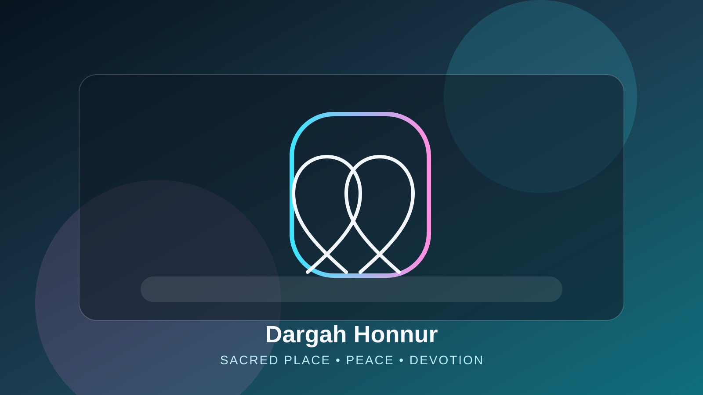

The saint began his journey in Bijapur, the Deccan sultanate country that shaped the region's Sufi traditions.
Welcome to
Hazrat Khwaja Syed Shah Sufi Sarmasth Hussaini Chishty Al Quadri (R.A)
The resting place of a Sufi saint who travelled from Bijapur across the Deccan and chose Honnur for his final years — a sanctuary of prayer, unity and devotion in Anantapur district, Andhra Pradesh.

About Dargah Honnur
A Legacy of Faith and Spiritual Harmony
Dargah Honnur is the revered shrine of Hazrat Khwaja Syed Shah Sufi Sarmasth Hussaini Chishty Al Quadri (R.A), who carried the teachings of the Chishti and Qadri orders through the Deccan. Pilgrims travel from across Anantapur district and neighbouring Karnataka — especially the Bellary region — to seek peace, attend qawwali gatherings and offer dua.
Read More
History
Bijapur
The Deccan
Honnur
Explore Events
From Bijapur to Honnur
Hazrat Khwaja Syed Shah Sufi Sarmasth Hussaini set out from Bijapur to carry the teachings of Islam through the Deccan, and chose the village of Honnur as the place to spend his final years. The shrine raised over his resting place has drawn seekers ever since.
He travelled through the Deccan carrying the teachings of the Chishti and Qadri silsilas, gathering followers along the way.
He chose Honnur for his final years, and the dargah built over his grave remains open to pilgrims every day.
Urs & Events
Upcoming Events
Urs and event dates are announced at the dargah. Please contact the dargah for the current schedule.
Saint Biography
Chishti and Qadri
Teacher in the Deccan
Rest at Honnur
Visit the Shrine
Hazrat Khwaja Syed Shah Sufi Sarmasth Hussaini Chishty Al Quadri (R.A)
Remembered for humility, service and devotion, the saint is honoured in both the Chishti and Qadri silsilas — his full title, Chishty Al Quadri, records that dual initiation. His shrine at Honnur remains a place of prayer, qawwali and spiritual solace.
Initiated in both silsilas, reflected in the title Chishty Al Quadri carried at the shrine.
Carried his teaching from Bijapur through the Deccan, drawing followers across communities.
Chose Honnur for his final years; the dargah over his grave is the village's enduring landmark.
Gallery
Moments of Blessings
Photographs of the dargah will be published here.
Dua Request
Submit for Dargah Updates
This form is not connected to the dargah yet — nothing is sent. Please contact the dargah directly.
Support Dargah Activities
Request a Meeting
Meet the Sajjada Nasheen
The Sajjada Nasheen welcomes devotees and visitors for blessings, guidance and spiritual support.